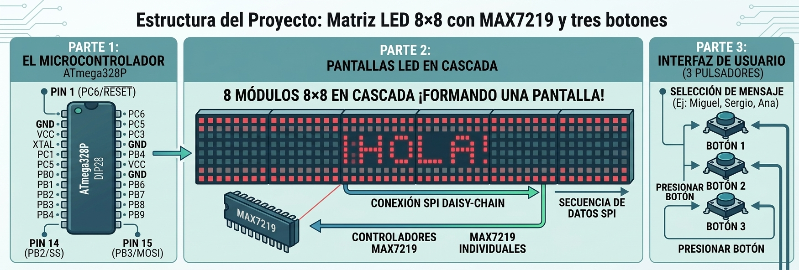
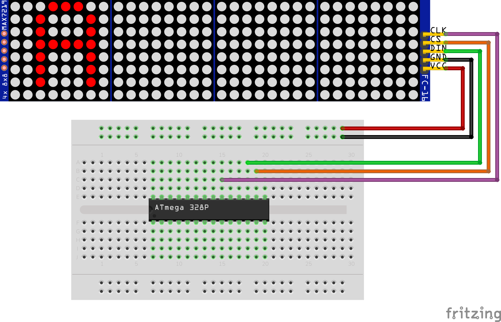
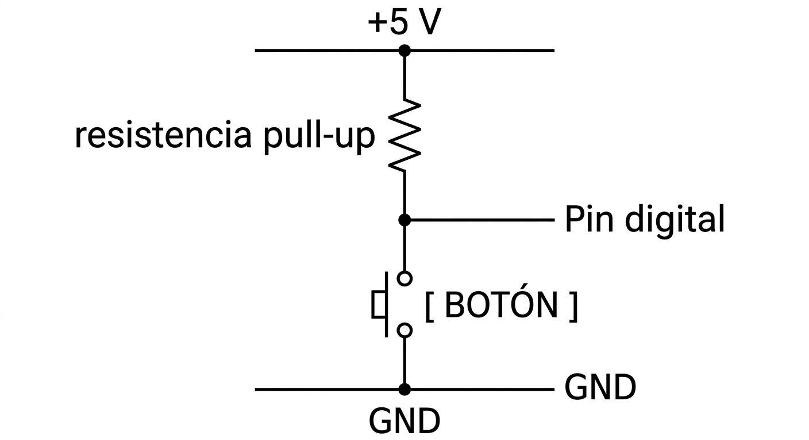
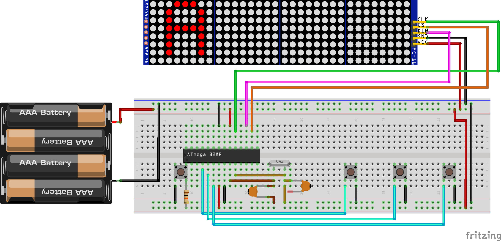

MATRIZ LED 8×8 CON MAX7219 Y TRES BOTONES
Diseño y funcionamiento
1. INTRODUCCIÓN
El proyecto consiste en construir una pequeña pantalla de mensajes utilizando ocho matrices LED de 8×8, controladas mediante circuitos integrados MAX7219, y tres pulsadores que permiten seleccionar diferentes mensajes.
Desarrollaremos el programa en Arduino y lo grabaremos en un ATmega328P standalone: en una placa con el circutio mínimo para su funcionamiento. Durante el desarrollo utilizaremos una placa Arduino UNO Rev. 3 como plataforma de programación y prueba; en la versión final, el programa se ejecutará directamente sobre el ATmega328P en configuración standalone.
La idea es sencilla: la pantalla muestra de forma continua un mensaje de bienvenida que se desplaza de derecha a izquierda. Cuando el usuario presiona uno de los tres botones, la pantalla abandona temporalmente el mensaje de bienvenida y muestra un mensaje asociado a ese botón. Una vez terminada la animación, el sistema vuelve automáticamente a la pantalla principal.
El proyecto resulta interesante porque reúne varios conceptos importantes de sistemas embebidos:
- control de matrices LED;
- comunicación serie mediante SPI;
- utilización de periféricos externos;
- lectura de entradas digitales;
- resistencias pull-up internas;
- organización de datos mediante arreglos;
- funciones para evitar repetir código;
- animaciones no bloqueantes mediante
displayAnimate(); - detección del final de una tarea para cambiar de estado.
Aunque el resultado es una pantalla de mensajes relativamente sencilla, el programa permite estudiar una estructura que aparece con mucha frecuencia en sistemas embebidos: un microcontrolador supervisa entradas, controla un periférico y modifica su comportamiento según los eventos recibidos.
2. ARQUITECTURA GENERAL DEL SITEMA
El sistema está formado por tres partes principales:
- Microcontrolador: un ATmega328P.
- Pantalla: formada por ocho módulos de matriz LED 8×8 con MAX7219.
- Interfaz de usuario: formada por tres pulsadores.

En el proyecto usamos 8 matrices de 8x8 conectados en cascada, formando una pantalla de 64x8 leds. Cada matriz de 8x8 es controlada por un cicuito integrado MAX7219.
2.1 ¿Por qué se utilizan MAX7219?
Una matriz de 8×8 contiene 8 × 8 = 64 LEDs. Si se intentara controlar directamente una matriz de este tipo desde el microcontrolador, habría que ocuparse de las filas y columnas, además de gestionar el multiplexado de los LED.
El MAX7219 simplifica considerablemente esta tarea.
En los módulos utilizados en este proyecto, el circuito integrado se encarga de controlar la matriz, realizar internamente el multiplexado y refresco de los LED, controlar la intensidad y recibir los datos mediante una interfaz serie.
Por ello, el microcontrolador no necesita dedicar continuamente sus pines a manejar directamente los 64 LED de cada matriz.
En este proyecto hay ocho matrices: 8 × 64 = 512 LEDs
Por tanto, físicamente la pantalla contiene 512 posiciones LED.
Esto no significa que el ATmega328P tenga que controlar 512 LED individualmente. Los MAX7219 realizan la mayor parte del trabajo relacionado con el accionamiento y multiplexado de las matrices.
2.2 Comunicación entre el ATmega328P y los MAX7219
Los MAX7219 reciben la información mediante una interfaz serie síncrona compatible funcionalmente con SPI.
En un ATmega328P, para la comunicación serial SPI se utilizan:
| Señal | Pin ATmega328P |
|---|---|
| MOSI | 17 (PB3) |
| MISO | 18 (PB4) |
| SCK | 19 (PB5) |
| SS | 16 (PB2) |
El MAX7219 no necesita devolver información al ATmega328P en este proyecto, por lo que MISO no participa en la comunicación utilizada. La interfaz empleada utiliza tres señales principales: datos, reloj y selección del dispositivo.
| Espiga MAX7219 |
|---|
| DIN |
| CLK |
| CS |
| GND |
La conexión entre ambos circuitos integrados es:
| ATmega328P SEÑAL (pin) - Puerto |
MAX7219 |
|---|---|
| MOSI (17) - PB3 | DIN |
| SCK (19) - PB5 | CLK |
| SS (16) - PB2 | CS |
| GND | GND |
Cuando existen varios MAX7219, los dispositivos se conectan en cascada. Esto permite enviar una secuencia de datos que se visualizarán en la pantalla formada por los ocho dispositivos.

La alimentación de una cadena de ocho módulos debe dimensionarse considerando la corriente total de los MAX7219 y de las matrices LED. La fuente utilizada debe proporcionar la tensión requerida y una corriente suficiente para la carga, manteniendo además una conexión de GND común con el microcontrolador.
3. CODIGO DEL PROGRAMA EN ARDUINO
El código del programa desarrolladop en el IDE de Arduino es el siguiente. Posteriormente se desarrollará cada una de sus partes para comprender cómo funciona.
#include <MD_Parola.h>
#include <MD_MAX72xx.h>
#include <SPI.h>
#define HARDWARE_TYPE MD_MAX72XX::FC16_HW
#define MAX_DEVICES 8
#define CS_PIN 10
#define BOTON_Miguel 2
#define BOTON_Sergio 3
#define BOTON_Ana 4
MD_Parola matriz(
HARDWARE_TYPE,
CS_PIN,
MAX_DEVICES
);
const char* mensajes[] = {
"Hola Armando. Bendiciones para ti en este dia tan especial. Por favor presiona el boton para recibir un mensaje",
"Te amo mucho mi HIJITO LINDO. Exitos y lo mejor de la vida para ti.",
"Feliz cumpleanios hermano. Te quiero mucho",
"Armando, espero que lo hayas pasado bonito hoy en tu dia. Te deseo lo mejor. Que cumplas muchos anios mas",
};
const byte TOTAL_MENSAJES =
sizeof(mensajes) / sizeof(mensajes[0]);
byte indiceMensaje = 0;
void mostrarMensaje(byte indice)
{
matriz.displayClear();
matriz.displayText(
mensajes[indice],
PA_LEFT,
40,
500,
PA_SCROLL_LEFT,
PA_SCROLL_LEFT
);
matriz.displayReset();
}
void setup()
{
matriz.begin();
matriz.setIntensity(15);
matriz.displayClear();
pinMode(BOTON_Miguel, INPUT_PULLUP);
pinMode(BOTON_Sergio, INPUT_PULLUP);
pinMode(BOTON_Ana, INPUT_PULLUP);
mostrarMensaje(indiceMensaje);
}
void loop()
{
if (digitalRead(BOTON_Miguel) == LOW)
{
indiceMensaje = 1;
mostrarMensaje(indiceMensaje);
delay(200);
}
if (digitalRead(BOTON_Sergio) == LOW)
{
indiceMensaje = 2;
mostrarMensaje(indiceMensaje);
delay(200);
}
if (digitalRead(BOTON_Ana) == LOW)
{
indiceMensaje = 3;
mostrarMensaje(indiceMensaje);
delay(200);
}
if (matriz.displayAnimate())
{
indiceMensaje = 0;
mostrarMensaje(indiceMensaje);
}
}3.1. Configuración del hardware en el programa
El código comienza estableciendo el tipo de módulo:
#define HARDWARE_TYPE MD_MAX72XX::FC16_HWEsta definición es importante.
No todos los módulos comerciales basados en MAX7219 tienen exactamente la misma disposición física de las matrices. El controlador puede ser el mismo, pero la conexión entre el MAX7219 y los LED puede variar.
Por eso MD_MAX72xx necesita conocer el tipo de hardware.
En este caso:
MD_MAX72XX::FC16_HWcorresponde a la disposición utilizada por los módulos tipo FC-16.
Después se indica el número de dispositivos:
#define MAX_DEVICES 8Esto informa a la biblioteca de que existen ocho dispositivos MAX7219.
Finalmente se define el pin utilizado como CS en la placa de Arduino:
#define CS_PIN 10Con estos parámetros se crea el objeto que representa la pantalla:
MD_Parola matriz(
HARDWARE_TYPE,
CS_PIN,
MAX_DEVICES
);La variable matriz será utilizada posteriormente para inicializar la pantalla, configurar su brillo, mostrar textos y ejecutar las animaciones.
3.2. Las bibliotecas utilizadas
El programa utiliza tres bibliotecas:
#include <MD_Parola.h>
#include <MD_MAX72xx.h>
#include <SPI.h>Cada una tiene una función diferente.
MD_Parola
Es la biblioteca de más alto nivel. Facilita la presentación de textos y efectos de animación.
Por ejemplo:
matriz.displayText(...)permite preparar un texto para mostrarlo en la pantalla.
MD_MAX72xx
Se ocupa del control de los MAX7219. Es la capa que permite trabajar con los dispositivos y sus matrices LED.
SPI
Proporciona el soporte para la comunicación serie utilizada por los MAX7219.
3.3. Los tres botones
Los tres pulsadores están conectados a los pines digitales 2, 3 y 4 de Arduino (en términos de programación), pero que a nivel de hardware, en el ATmega328P configurado para funcionar de forma independiente en un circuito propio, fuera de la placa de desarrollo Arduino (
#define BOTON_Miguel 2
#define BOTON_Sergio 3
#define BOTON_Ana 4Cada botón está conectado entre el pin correspondiente y GND.
El programa configura los pines de esta manera:
pinMode(BOTON_Miguel, INPUT_PULLUP);
pinMode(BOTON_Sergio, INPUT_PULLUP);
pinMode(BOTON_Ana, INPUT_PULLUP);Aquí aparece un concepto fundamental de electrónica digital: la resistencia pull-up.
3.4. ¿Qué hace INPUT_PULLUP?
Cuando una entrada digital queda eléctricamente desconectada, su estado puede quedar indefinido. El microcontrolador podría interpretar el pin unas veces como HIGH y otras como LOW.
La resistencia pull-up mantiene normalmente la entrada en un nivel lógico alto.
En este caso, la resistencia pull-up está integrada en el ATmega328P y se habilita mediante INPUT_PULLUP, por lo que no es necesario añadir una resistencia externa para cada botón.
El circuito queda conceptualmente así:

Cuando el botón está libre:
Pin = HIGH
Cuando se presiona:
Pin = LOW
Por eso el programa comprueba:
if (digitalRead(BOTON_Miguel) == LOW)No debemos interpretar LOW como un error o como una entrada desactivada. En este circuito, LOW significa botón presionado.
Esta lógica se conoce como lógica activa en bajo.
3.5. Organización de los mensajes
El programa utiliza un arreglo de cadenas:
const char* mensajes[] = {
"Hola Armando. Bendiciones para ti en este dia tan especial. Por favor presiona el boton para recibir un mensaje",
"Te amo mucho mi HIJITO LINDO. Exitos y lo mejor de la vida para ti.",
"Feliz cumpleanios hermano. Te quiero mucho",
"Armando, espero que lo hayas pasado bonito hoy en tu dia. Te deseo lo mejor. Que cumplas muchos anios mas",
};Esto es mejor que crear una variable independiente para cada mensaje.
Los mensajes quedan organizados mediante índices:
mensajes[0] → Bienvenida
mensajes[1] → Miguel
mensajes[2] → Sergio
mensajes[3] → Ana
Esta organización simplifica considerablemente el programa.
Por ejemplo:
mostrarMensaje(2);significa mostrar el mensaje almacenado en:
mensajes[2]es decir, el mensaje de Sergio.
Los textos se han escrito sin caracteres acentuados, como en cumpleanios y anios, para evitar depender de la representación de caracteres extendidos y de la tabla de caracteres utilizada por la biblioteca y el módulo de visualización.
3.6. Cálculo automático de la cantidad de mensajes
El programa utiliza:
const byte TOTAL_MENSAJES =
sizeof(mensajes) / sizeof(mensajes[0]);El objetivo es obtener automáticamente la cantidad de elementos del arreglo.
Si existen cuatro mensajes:
mensajes[0]
mensajes[1]
mensajes[2]
mensajes[3]
entonces:
TOTAL_MENSAJES = 4
Esta técnica tiene una ventaja importante.
Si posteriormente se agrega un quinto mensaje, no es necesario cambiar manualmente TOTAL_MENSAJES. El compilador calculará nuevamente la cantidad de elementos.
En este programa concreto, TOTAL_MENSAJES se calcula pero no se utiliza posteriormente en la lógica principal. Se conserva porque resulta útil si el programa evoluciona y se necesita recorrer, validar o gestionar dinámicamente el conjunto de mensajes.
3.7. La variable indiceMensaje
El programa mantiene una variable que identifica el mensaje que debe mostrarse:
byte indiceMensaje = 0;El valor inicial es 0, porque el sistema debe comenzar con el mensaje de bienvenida.
La correspondencia es:
indiceMensaje = 0 → Bienvenida
indiceMensaje = 1 → Mensaje de Miguel
indiceMensaje = 2 → Mensaje de Sergio
indiceMensaje = 3 → Mensaje de Ana
Este mecanismo es sencillo pero muy importante.
En lugar de tener que manejar cuatro programas diferentes, el programa trabaja con un único concepto: el mensaje que debe mostrarse actualmente.
3.8. La función mostrarMensaje()
Una de las decisiones más importantes del programa es haber concentrado el cambio de mensaje en una función:
void mostrarMensaje(byte indice)La función realiza tres operaciones fundamentales.
Primera operación: limpiar la pantalla
matriz.displayClear();Esto elimina el contenido que estaba siendo mostrado.
Segunda operación: configurar el nuevo texto
matriz.displayText(
mensajes[indice],
PA_LEFT,
40,
500,
PA_SCROLL_LEFT,
PA_SCROLL_LEFT
;Aquí se le indica a MD_Parola qué debe mostrar y cómo debe animarlo.
Tercera operación: reiniciar la animación
matriz.displayReset();Esto hace que el mensaje empiece nuevamente desde el principio.
La función encapsula todo el procedimiento.
Así, desde cualquier parte del programa basta con escribir:
mostrarMensaje(1);para cambiar al mensaje de Miguel.
3.9. Configuración de la animación
La llamada:
matriz.displayText(
mensajes[indice],PA_LEFT,
40,
500,
PA_SCROLL_LEFT,
PA_SCROLL_LEFT
);contiene varios parámetros.
El primero:
mensajes[indice]es el texto que se desea mostrar.
El segundo:
PA_LEFTdefine la alineación.
El tercero:
40es el intervalo temporal utilizado por la animación y determina su velocidad de actualización.
El cuarto:
500define la pausa configurada para la animación.
Los dos últimos parámetros corresponden a los efectos de entrada y salida:
PA_SCROLL_LEFT,
PA_SCROLL_LEFTEn ambos casos se utiliza el desplazamiento hacia la izquierda. Por ello, el texto se presenta mediante una animación de desplazamiento hacia la izquierda.
3.10. Inicialización mediante setup()
La función:
void setup()se ejecuta una sola vez después de encender o reiniciar el microcontrolador.
Primero se inicializa la pantalla:
matriz.begin();Después se establece el brillo:
matriz.setIntensity(15);El MAX7219 permite seleccionar diferentes niveles de intensidad. En este caso se utiliza:
0 → mínimo
15 → máximo
Por tanto:
matriz.setIntensity(15);configura la máxima intensidad disponible mediante este control.
Después se limpia la pantalla:
matriz.displayClear();Esto garantiza que el sistema comience desde un estado conocido.
3.11. Configuración de los botones
A continuación se configuran las tres entradas:
pinMode(BOTON_Miguel, INPUT_PULLUP);
pinMode(BOTON_Sergio, INPUT_PULLUP);
pinMode(BOTON_Ana, INPUT_PULLUP);Finalmente se muestra el primer mensaje:
mostrarMensaje(indiceMensaje);Como:
indiceMensaje = 0;el programa comienza mostrando:
mensajes[0]es decir, el mensaje de bienvenida.
3.12. El papel de loop()
La función:
void loop()se ejecuta continuamente.
A diferencia de setup(), que se ejecuta una sola vez, loop() se repite mientras el microcontrolador esté funcionando.
En cada iteración el programa realiza dos tareas:
- comprobar los tres botones;
- avanzar la animación de la pantalla.
La estructura general es:
loop()
│
├── ¿Botón Miguel?
│
├── ¿Botón Sergio?
│
├── ¿Botón Ana?
│
└── ejecutar displayAnimate()
Este esquema es característico de muchos programas sencillos para microcontroladores.
3.13. ¿Qué ocurre al presionar el botón de Miguel?
El programa comprueba:
if (digitalRead(BOTON_Miguel) == LOW)Si el resultado es verdadero, significa que el botón está presionado.
Entonces:
indiceMensaje = 1;selecciona el mensaje de Miguel.
Después:
mostrarMensaje(indiceMensaje);limpia la pantalla y comienza la animación.
Finalmente:
delay(200);introduce una espera de 200 ms que reduce la posibilidad de que una única pulsación mecánica sea interpretada como múltiples pulsaciones.
El mismo principio se utiliza para Sergio y Ana.
3.14. El rebote mecánico de los pulsadores
Un pulsador mecánico no cambia de estado eléctrico de manera perfectamente limpia.
Cuando se presiona, los contactos pueden producir durante un corto intervalo una secuencia parecida a:
HIGH ─────┐
│
└─LOW─HIGH─LOW─HIGH─LOW────────
El microcontrolador podría interpretar esas transiciones como varias pulsaciones.
El programa utiliza:
delay(200);como una forma sencilla de antirrebote.
Para un proyecto didáctico y una interfaz que solamente necesita responder a pulsaciones ocasionales, este método puede ser suficiente. Sin embargo, delay(200) bloquea temporalmente la ejecución del programa durante 200 ms.
Por ello, no debe confundirse esta solución con un sistema de antirrebote completamente no bloqueante. En un sistema más exigente convendría implementar un antirrebote basado en tiempo, utilizando por ejemplo millis(), sin detener el procesador con delay().
3.15. La parte más importante: displayAnimate()
Una de las características más interesantes del programa es:
if (matriz.displayAnimate())La animación no se ejecuta mediante un for o un while que bloquee completamente el programa. displayAnimate() realiza una parte del trabajo de la animación y devuelve el control al programa. En la siguiente iteración de loop() vuelve a ser llamada para continuar el proceso.
De esta manera, la animación se construye mediante muchas llamadas sucesivas en lugar de mantener al microcontrolador detenido dentro de un bucle durante toda la duración del efecto.
Conceptualmente:
loop()
│
▼
displayAnimate()
│
├── todavía no termina → false
│
└── terminó → true
Esto permite que el programa vuelva a ejecutar loop() y, por tanto, continúe comprobando los botones mientras la animación está avanzando.
Por ejemplo, si se está mostrando el mensaje de Miguel y el usuario presiona el botón de Sergio, el programa puede abandonar la animación actual y configurar el mensaje de Sergio.
Esta característica es especialmente importante en sistemas embebidos porque permite combinar la presentación de información con la supervisión de entradas sin mantener al procesador atrapado dentro de un bucle de espera.
3.16. ¿Qué ocurre si se presionan dos botones?
El programa comprueba los tres botones mediante tres instrucciones if independientes:
if (digitalRead(BOTON_Miguel) == LOW)
{
...
}
if (digitalRead(BOTON_Sergio) == LOW)
{
...
}
if (digitalRead(BOTON_Ana) == LOW)
{
...
}Por tanto, si dos botones permanecen presionados simultáneamente, más de una condición puede resultar verdadera durante la misma ejecución de loop().
En ese caso, un bloque puede seleccionar un mensaje y el siguiente bloque puede reemplazar inmediatamente esa selección. Para este proyecto se considera que el usuario presiona un solo botón a la vez.
3.17. Regreso automático al mensaje de bienvenida
Cuando:
matriz.displayAnimate()devuelve true, significa que la animación ha terminado.
Entonces el programa ejecuta:
indiceMensaje = 0;y vuelve a llamar:
mostrarMensaje(indiceMensaje);El flujo completo queda así:
┌───────────────────────┐
│ MENSAJE BIENVENIDA │
│ mensajes[0] │
└───────────┬───────────┘
│
se presiona un botón
│
┌──────────────┼──────────────┐
│ │ │
▼ ▼ ▼
mensajes[1] mensajes[2] mensajes[3]
Miguel Sergio Ana
│ │ │
└──────────────┼──────────────┘
│
termina animación
│
▼
┌───────────────────────┐
│ MENSAJE BIENVENIDA │
│ mensajes[0] │
└───────────────────────┘
Por tanto, el mensaje de bienvenida actúa como estado normal o estado de reposo del sistema.
4. Una interpretación como máquina de estados
El código está organizado en bloques con responsabilidades claras:
- Bibliotecas
- Configuración del hardware
- Configuración de botones
- Mensajes
- Número de mensajes
- Mensaje actual
- Función
mostrarMensaje() setup()loop()
Esta organización no es solamente estética.
Ayuda a localizar rápidamente cada parte del programa.
Por ejemplo:
- si cambia el número de matrices → sección de hardware;
- si cambia un botón → sección de botones;
- si cambia un texto → sección de mensajes;
- si cambia el efecto →
mostrarMensaje(); - si cambia la lógica de selección →
loop().
Esta separación es recomendable incluso en programas pequeños.
Aunque el programa no utiliza formalmente una enumeración enum ni una máquina de estados explícita, conceptualmente puede entenderse de esa manera.
No debemos confundir esta interpretación conceptual con una implementación formal de una máquina de estados. En el código no existe un enum, una variable de estado específica ni una estructura switch que gestione explícitamente las transiciones. La variable indiceMensaje cumple parcialmente esa función.
Tenemos cuatro estados conceptuales:
ESTADO 0 → Bienvenida
ESTADO 1 → Mensaje Miguel
ESTADO 2 → Mensaje Sergio
ESTADO 3 → Mensaje Ana
La transición depende de los botones:
Botón Miguel
│
▼
┌──────────────┐
│ MIGUEL │
└──────┬───────┘
│
▼
BIENVENIDA
Botón Sergio
│
▼
┌──────────────┐
│ SERGIO │
└──────┬───────┘
│
▼
BIENVENIDA
Botón Ana
│
▼
┌──────────────┐
│ ANA │
└──────┬───────┘
│
▼
BIENVENIDA
Esta forma de analizar el programa es muy útil porque permite comprender la lógica independientemente de la biblioteca utilizada.
5. ATMEGA328P EN CIRCUITO PROPIO

5. Conclusión
Este proyecto es un buen ejemplo de cómo un sistema embebido puede construirse a partir de elementos relativamente sencillos.
El ATmega328P recibe información de tres entradas digitales. Los pulsadores utilizan las resistencias pull-up internas, por lo que una pulsación se interpreta como un nivel LOW.
El microcontrolador mantiene un índice que determina qué mensaje debe mostrarse. Los textos están almacenados en un arreglo y una función específica, mostrarMensaje(), concentra las operaciones necesarias para cambiar de contenido.
La pantalla está formada por ocho matrices de 8×8 controladas mediante MAX7219. Los ocho controladores trabajan en cascada y reciben los datos desde el microcontrolador mediante una interfaz serie compatible con SPI.
La biblioteca MD_Parola se encarga de una parte importante de la lógica de presentación y animación, mientras que MD_MAX72xx proporciona el control de los dispositivos MAX7219.
Finalmente, displayAnimate() permite avanzar la animación sin detener completamente el funcionamiento del programa. Cuando el mensaje seleccionado termina, el programa vuelve al mensaje de bienvenida y queda nuevamente esperando una pulsación.
Lo más valioso del proyecto, sin embargo, no es solamente conseguir que aparezca un texto en ocho matrices. Es la estructura que hay detrás:
entrada → decisión → estado → salida → fin de la animación → retorno al estado normal
Esa misma lógica puede encontrarse, con mayor complejidad, en paneles de información, interfaces de usuario, sistemas de control, máquinas industriales y muchos otros sistemas embebidos.